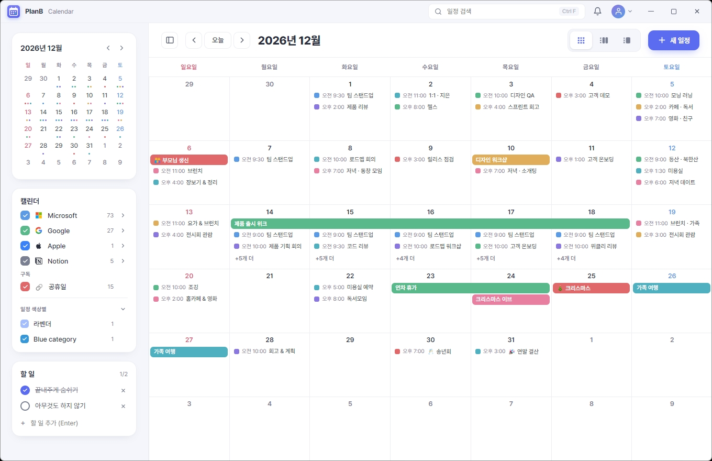

네이버 캘린더와 구글 캘린더 연동, 진짜 되나 — 되는 것과 안 되는 것
- 「연동」이라는 한 단어에 서로 다른 세 가지가 섞여 있음. 어느 쪽을 원하는지부터 갈라야 함.
- 구글 일정을 네이버에서 보기만 — 됨. 구글의 iCal 주소를 네이버에 구독으로 등록함. 읽기 전용.
- 한 번에 옮기기 — 됨. 파일로 내보내고 가져옴. 그 뒤의 변경은 따라오지 않음.
- 양쪽 실시간 양방향 — 확인된 방법이 없음. 두 서비스 모두 그런 기능을 내놓지 않음.
- 그래서 셋 다 아쉬우면, 두 계정을 한 앱에 연결해 같이 쓰는 쪽이 현실적임.
「네이버 캘린더 구글 캘린더 연동」으로 검색하면 되는 방법과 안 되는 방법이 섞여 나옴. 따라 하다 보면 중간까지는 되는데 원하는 건 안 되는 일이 생김.
원인은 「연동」이라는 말 하나에 서로 다른 세 가지가 들어 있기 때문. 먼저 그것부터 가름.
「연동」에 섞여 있는 세 가지
| 원하는 것 | 되나 | 한계 |
|---|---|---|
| ① 구글 일정을 네이버에서 보기만 | ○ | 읽기 전용 · 반영 지연 |
| ② 일정을 한 번에 옮기기 | ○ | 1회성 · 이후 변경 안 따라옴 |
| ③ 양쪽 실시간 양방향 | ✕ | 확인된 방법 없음 |
많은 사람이 원하는 건 ③인데, 검색에 나오는 방법은 대개 ①이나 ②임. 그래서 「했는데 안 되네」가 생김.
① 구글 일정을 네이버에서 보기 — 됨
구글 캘린더는 자기 일정을 주소 하나로 내보내 주는 기능이 있음. 그 주소를 네이버 캘린더에 구독으로 등록하면 구글 일정이 네이버 화면에 같이 보임.
대강의 순서는 이럼.
- 구글 캘린더 웹에서 해당 캘린더의 설정 및 공유로 들어감
- 아래쪽 캘린더 통합에서 iCal 형식의 비공개 주소를 복사함
- 네이버 캘린더에서 URL로 구독하기에 그 주소를 붙여넣음
두 가지를 미리 알아 둘 것. 구독한 일정은 읽기 전용이라 네이버 쪽에서 고칠 수 없음. 그리고 구글에서 바꾼 것이 반영되는 데 시간이 걸림 — 최대 하루까지 걸린다는 안내가 있음. 그래서 자주 바뀌는 일정에는 잘 안 맞고, 공휴일이나 고정 일정에 어울림.
⚠️ 메뉴 이름과 위치는 서비스가 바뀌면 달라짐. 화면에서 같은 뜻의 항목을 찾아 쓰면 됨.
② 한 번에 옮기기 — 되지만 한 번뿐
양쪽 다 일정을 파일(.ics)로 내보내고 가져오는 기능이 있음. 네이버에서 내보낸 파일을 구글에서 가져오면 일정이 넘어감.
문제는 그걸로 끝이라는 것. 옮긴 뒤에 어느 한쪽에서 일정을 고치거나 추가해도 다른 쪽은 모름. 연결이 남지 않는 복사라서 그럼.
그래서 이 방법은 서비스를 아예 갈아탈 때 쓰는 것이지, 두 곳을 계속 같이 쓰려는 목적에는 맞지 않음.
③ 양쪽 실시간 양방향 — 확인된 방법이 없음
가장 많이 찾는 것이지만 두 서비스 모두 그런 기능을 내놓지 않음. 네이버에서 만든 일정이 구글에 바로 생기고, 구글에서 고친 것이 네이버에 바로 반영되는 — 그런 연결은 없음.
①을 반대 방향으로 하면 되지 않나 싶지만, 네이버가 자기 일정을 구독 주소로 내주는 기능은 확인되지 않음. 그래서 네이버 → 구글 방향은 ②(한 번 옮기기)만 남음.
정리하면 절반씩만 됨. 한 방향으로 보기만 되거나, 한 번 옮기고 끝나거나.
그럼 어떻게 해야 하나
생각을 뒤집는 쪽이 빠름. 두 캘린더를 서로 붙이려 하지 말고, 둘 다 한곳에서 열어 두는 것.
캘린더 앱에 네이버 계정과 구글 계정을 각각 연결하면, 한 화면에 두 캘린더의 일정이 색으로 구분돼 같이 보임. 각 일정은 원래 서비스에 그대로 저장되므로 옮기거나 복사할 필요가 없음.

앞의 ①②와 결정적으로 다른 점이 둘 있음.
- 읽기 전용이 아님 — 앱에서 만들거나 고친 일정이 네이버·구글 원본에 그대로 반영됨
- 기다릴 필요가 없음 — 구독처럼 하루씩 밀리지 않음
대신 한계도 분명함. 이것도 네이버와 구글을 서로 잇는 것은 아님. 네이버 일정은 끝까지 네이버에, 구글 일정은 끝까지 구글에 있음. 다만 보고 고치는 자리를 한곳으로 모으는 것임. ③을 찾던 사람이 실제로 원하던 게 대개 이것임.

애플·아웃룩·네이버웍스도 같은 이야기
「애플 캘린더와 네이버 캘린더 동기화」, 「네이버캘린더 아웃룩캘린더 연동」, 「네이버웍스 캘린더와 구글 캘린더」 — 묻는 이름만 다르고 사정은 같음. 서비스끼리 직접 잇는 길은 거의 없고, 있어도 한 방향 읽기 전용임.
그래서 답도 같음. 쓰는 캘린더가 둘 이상이면 한 앱에 모아 연결하는 쪽이 간단함. PlanB Calendar는 네이버·네이버웍스·구글·Microsoft 365·Apple iCloud·Notion을 한 화면에서 쓰고, URL(ICS) 구독도 함께 받음.
자주 묻는 질문
방향에 따라 다름. 구글 일정을 네이버에서 보기만 하는 것은 구글의 iCal 비공개 주소를 네이버의 URL 구독에 등록하면 됨. 반대로 네이버 일정을 구글에서 계속 보게 하는 방법은 확인된 것이 없고, 한 번 옮기는 것만 됨.
두 서비스가 서로 일정을 주고받게 하는 기능은 어느 쪽도 제공하지 않음. 대신 두 계정을 한 캘린더 앱에 연결하면 한 화면에서 같이 보고 각각 원본에 바로 편집할 수 있음.
못 고침. URL 구독은 읽기 전용이라 보기만 됨. 고치려면 원래 서비스에서 고쳐야 하고 반영에도 시간이 걸림.
같음. 서비스끼리 직접 잇는 길은 거의 없고, 있어도 한 방향 읽기 전용임. 여러 곳을 함께 쓰려면 한 앱에 모아 연결하는 쪽이 간단함.